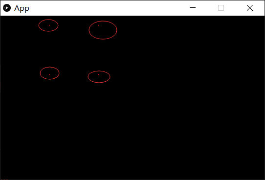
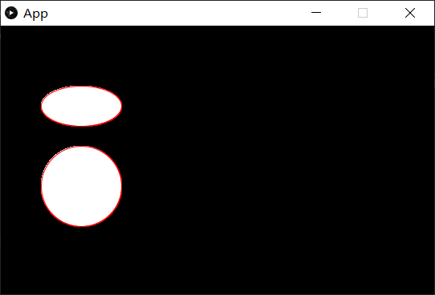

关于processing的api文档可以在这里查看https://processing.org/reference/
每个方法的含义和用法都有说明，没有特殊说明下面模板代码不会改变
1
2
3
4
5
6
7
8
9
10
11
12
13
14
15
16
17
18
19
20
21
22
23
24
25
26
27
28
29
30
31
| package demo;
import processing.core.PApplet;
public class App extends PApplet {
public App(){
}
public void settings(){
size(540, 335);
}
public void setup(){
background(0);
}
public void draw(){
stroke(255,0,0);
}
public static void main(String[] args) {
PApplet.main("demo.App");
}
}
|
由于绘画逻辑只是在draw()中，所以为了节省篇幅后面的代码，只给出draw()内的代码，和绘画效果
基础图形绘画
点—画点point()方法
1
2
3
4
5
6
7
8
9
| public void draw(){
stroke(255,0,0);
point(100, 20);
point(200, 20);
point(100, 120);
point(200, 120);
}
|
效果如下：画了四个点

线—画线line()方法
1
2
3
4
5
6
7
8
9
10
11
| public void draw(){
stroke(255,0,0);
line(100，20,200,20);
line(100,20,100,120);
line(200,20,200,120);
line(100,120,200,120);
line(100,20,200,120);
}
|
效果如下：五条线

面—椭圆ellipse ()方法
1
2
3
4
5
6
7
| public void draw(){
stroke(255,0,0);
ellipse(100, 100, 100, 50);
ellipse(100, 200, 100, 100);
}
|
效果如下，椭圆和圆

由于使用VSCode开发，有一些图形的绘画是无法实现的，但是在PDE下面试完全没问题的，例如三角形，正方形等图形在VSCode下是无法绘制的，关于一些其他图形的绘制，可以参考api文档，https://processing.org/reference/

下一章processing基础3—动画效果